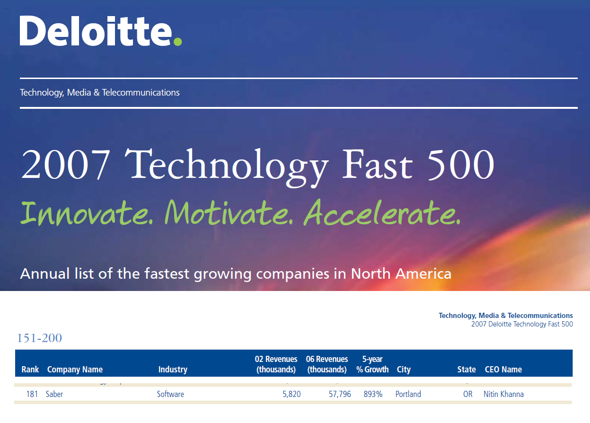
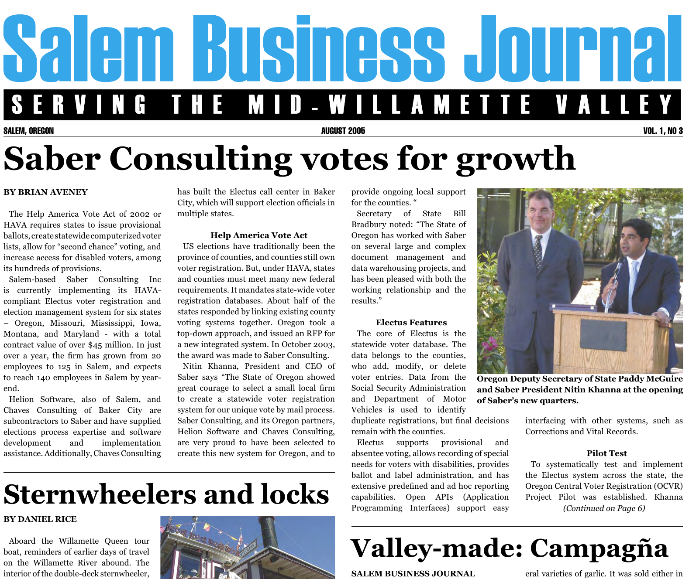

Commercial Software
Directed Saber's Voter Registration and Elections Management practice end-to-end, conceiving and delivering a market-disrupting COTS product for the S&LG sector. Scaled revenue 10× against intense competition and aggressive delivery timelines, ranking the company 181st on Deloitte's 2007 Technology Fast 500.
Saber Consulting was a Portland, OR-based technology company specializing in Commercial Off-the-Shelf
(COTS) software deployment for the State and Local Government (S&LG) sector. Following significant
growth and market success, the company was acquired by EDS in 2008.
Opportunity: The Help America Vote Act (HAVA) of 2002 mandated States to create
centralized voter databases, issue provisional ballots, and increase access for disabled voters, among
other provisions.
Proposition: Adopt a Rapid Application Development (RAD) methodology and build strategic
partnerships with local vendors to deliver a highly configurable COTS system, enabling rapid deployment
across States with varying legislative and operational requirements.
Strategic Partnerships: Cultivated strategic partnerships to secure county buy-in and
adoption, leveraging Saber's public sector track record and established state relationships. Negotiated
partnerships with two trusted local election solutions providers and hired retired county clerks as Subject
Matter Experts — ensuring local familiarity and accuracy during requirements definition. Personally visited
all jurisdictions to observe workflows and instill user confidence.
National Sales Support: Provided critical pre-sales and solution architecture support
throughout the full sales lifecycle — conducting in-depth RFP analysis, defining functional compliance,
scoping technical solutions, and producing precise budget estimates. Partnered with Bid Managers to craft
compelling technical proposals and delivered high-impact demonstrations to executive-level stakeholders,
directly enabling state-by-state contract wins.
Rapid Requirements & Time-Boxed Delivery: Led Joint Application Development (JAD)
sessions across all 36 counties in Oregon to capture requirements and achieve consensus. Applied MoSCoW
prioritization to define aggressive one-week development windows — compressing what would typically be a
multi-year government procurement into a 12-month MVP delivery that entered the market ahead of
competitors.
MVP Delivery & Commercial Acceleration: Drove iterative development through
frequent prototype reviews with county SMEs — securing sign-off at each sprint and maintaining delivery
momentum. The compressed 12-month timeline gave Saber a first-mover advantage in a newly mandated market,
directly enabling the rapid state-by-state expansion that drove 10× revenue growth in four years.
HAVA Compliance & Market Differentiation: The platform delivered full HAVA
compliance across all 13 deployed states — covering duplicate voter detection, multi-jurisdiction record
transfer, DMV interfacing, address validation, poll book generation, redistricting with GIS integration,
and document scanning. The breadth of compliance coverage became Saber's primary competitive differentiator
in a market where regulatory conformance was non-negotiable for procurement.
Jurisdictions Onboarding: Engineered a scalable, six-track onboarding framework
(Project Control, Customization, Interfaces, Data Migration, Infrastructure, Rollout) to support
multi-state deployment. This standardized, parallelized approach ensured zero failed transitions, optimized
resource utilization, and accelerated time-to-value across all 13 states.
Post-Sale Infrastructure: Established a centralized scalable call center for
after-sales support — starting with 5 agents and scaling to 20+ within the first year — maintaining high
customer satisfaction and trust across all 13 deployed states.
The practice grew from zero to 10× revenue in four years — not through marketing spend, but through a
deliberate commercial strategy: the right legislative window, local partnerships that unlocked county trust,
a delivery methodology purpose-built for speed, and a scalable onboarding framework that made every new
state easier to win. The result was a market-defining product, recognition on Deloitte's Technology Fast
500, and an acquisition that validated the commercial thesis.

Saber ranked 181st on Deloitte’s 2007 Technology Fast 500 list. The
practice's sterling market
reputation and noticeable growth in revenue and market share were key drivers for the acquisition of the
company by EDS in 2008.

Oregon State announcing partnership with Saber


Celebrating success, growth, and great wins!
900%
Revenue Growth in 4 Years
13
U.S. States Deployed
181st
Deloitte Tech Fast 500, 2007
12 Mo
MVP to Market Timeline